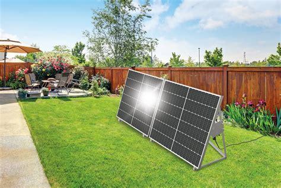

Introduction to Green Power
Renewable energy is energy that is collected from renewable resources, which are naturally replenishing on a human timescale. This includes solar energy, wind energy, hydroelectric power, geothermal energy, and biomass. Unlike fossil fuels, which are finite and deplete over time, renewable sources are sustainable and produce little to no greenhouse gas emissions.
As the world faces the challenges of climate change, the transition to renewable energy is not just an environmental necessity but an economic opportunity. Countries around the globe are investing heavily in infrastructure to support this shift, aiming for net-zero carbon emissions by 2050.

The adoption of these technologies is accelerating. According to recent studies, the cost of solar photovoltaics has dropped by over 80% in the last decade, making it the cheapest source of electricity in history in many parts of the world.
Why It Matters
The benefits of renewable energy extend beyond carbon reduction. They include energy security, job creation, and public health improvements.
- Reduction of Carbon Footprint
- Improved Air Quality and Public Health
- Energy Independence for Nations
- Job Creation in Green Sectors
- Stabilization of Energy Prices